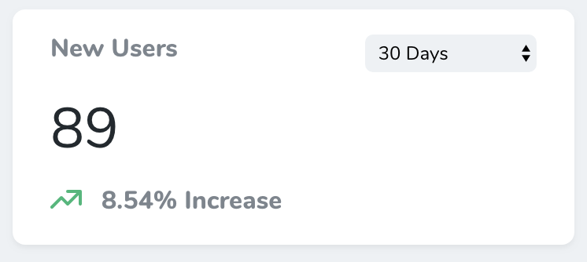
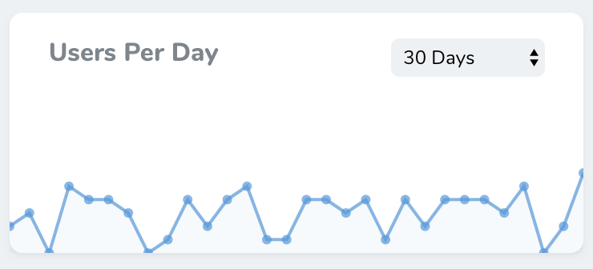
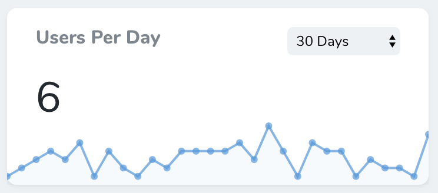
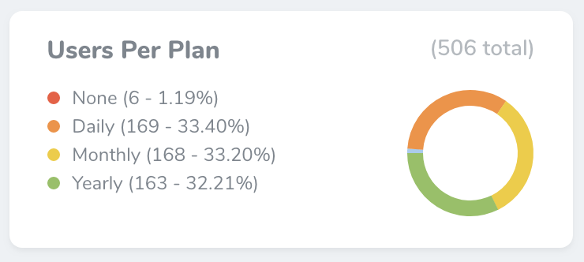

Defining Metrics
Nova metrics allow you to quickly gain insight on key business indicators for your application. For example, you may define a metric to display the total number of users added to your application per day, or the amount of weekly sales.
Nova offers three types of built-in metrics: value, trend, and partition. We'll examine each type of metric and demonstrate their usage below.
Value Metrics
Value metrics display a single value and, if desired, its change compared to a previous time interval. For example, a value metric might display the total number of users created in the last thirty days compared with the previous thirty days:

Value metrics may be generated using the nova:value Artisan command. By default, all new metrics will be placed in the app/Nova/Metrics directory:
php artisan nova:value NewUsers
Once your value metric class has been generated, you're ready to customize it. Each value metric class contains a calculate method. This method should return a Laravel\Nova\Metrics\ValueResult object. Don't worry, Nova ships with a variety of helpers for quickly generating results.
In this example, we are using the count helper, which will automatically perform a count query against the specified Eloquent model for the selected range, as well as automatically retrieve the count for the "previous" range:
<?php
namespace App\Nova\Metrics;
use App\Models\User;
use Illuminate\Http\Request;
use Laravel\Nova\Metrics\Value;
class NewUsers extends Value
{
/**
* Calculate the value of the metric.
*
* @param \Illuminate\Http\Request $request
* @return mixed
*/
public function calculate(Request $request)
{
return $this->count($request, User::class);
}
/**
* Get the ranges available for the metric.
*
* @return array
*/
public function ranges()
{
return [
30 => '30 Days',
60 => '60 Days',
365 => '365 Days',
'TODAY' => 'Today',
'MTD' => 'Month To Date',
'QTD' => 'Quarter To Date',
'YTD' => 'Year To Date',
];
}
/**
* Get the URI key for the metric.
*
* @return string
*/
public function uriKey()
{
return 'new-users';
}
}
Value Query Types
Value metrics don't just ship with a count helper. You may also use a variety of other aggregate functions when building your metric.
Average
The average method may be used to calculate the average of a given column compared to the previous time interval / range:
return $this->average($request, Post::class, 'word_count');
Sum
The sum method may be used to calculate the sum of a given column compared to the previous time interval / range:
return $this->sum($request, Order::class, 'price');
Max
The max method may be used to calculate the maximum of a given column compared to the previous time interval / range:
return $this->max($request, Order::class, 'total');
Min
The min method may be used to calculate the minimum of a given column compared to the previous time interval / range:
return $this->min($request, Order::class, 'total');
Value Result Formatting
You can add a prefix and/or suffix to the Value metric's result by calling the prefix and suffix methods when returning the ValueResult:
public function calculate(Request $request)
{
return $this->count($request, User::class)
->prefix('$')
->suffix('per unit');
}
You may also use the currency method to specify the prefix for the result. By default the currency symbol will be $, but you may also pass in your own symbol:
public function calculate(Request $request)
{
return $this->count($request, User::class)
->currency('£');
}
To customize the display format, you can use the format method. The format must be a format supported by Numbro:
public function calculate(Request $request)
{
return $this->count($request, User::class)
->format('0,0');
}
Value Ranges
Every value metric class contains a ranges method. This method determines the ranges that will be available in the value metric's range selection menu. The array's keys determine the number of days that should be included in the query, while the values determine the "human readable" text that will be placed in the range selection menu. Of course, you are not required to define any ranges at all:
/**
* Get the ranges available for the metric.
*
* @return array
*/
public function ranges()
{
return [
5 => '5 Days',
10 => '10 Days',
15 => '15 Days',
'TODAY' => 'Today',
'MTD' => 'Month To Date',
'QTD' => 'Quarter To Date',
'YTD' => 'Year To Date',
'ALL' => 'All Time'
];
}
TODAY / MTD / QTD / YTD / ALL Range Keys
You may customize these ranges to suit your needs; however, if you are using the built-in "Today", "Month To Date", "Quarter To Date", "Year To Date", or "All Time" ranges, you should not change their keys.
Zero Result Values
By default, Nova will handle results of 0 as a result containing no data. This may not always be correct, which is why you can use the allowZeroResult method to prevent this from happening:
return $this->result(0)->allowZeroResult();
Manually Building Value Results
If you are not able to use the included query helpers for building your value metric, you may manually provide the final values to the metric using the result and previous methods:
return $this->result(100)->previous(50);
Trend Metrics
Trend metrics display values over time via a line chart. For example, a trend metric might display the number of new users created per day over the previous thirty days:

Trend metrics may be generated using the nova:trend Artisan command. By default, all new metrics will be placed in the app/Nova/Metrics directory:
php artisan nova:trend UsersPerDay
Once your trend metric class has been generated, you're ready to customize it. Each trend metric class contains a calculate method. This method should return a Laravel\Nova\Metrics\TrendResult object. Don't worry, Nova ships with a variety of helpers for quickly generating results.
In this example, we are using the countByDays helper, which will automatically perform a count query against the specified Eloquent model for the selected range and for the selected interval unit (in this case, days):
<?php
namespace App\Nova\Metrics;
use App\Models\User;
use Illuminate\Http\Request;
use Laravel\Nova\Metrics\Trend;
class UsersPerDay extends Trend
{
/**
* Calculate the value of the metric.
*
* @param \Illuminate\Http\Request $request
* @return mixed
*/
public function calculate(Request $request)
{
return $this->countByDays($request, User::class);
}
/**
* Get the ranges available for the metric.
*
* @return array
*/
public function ranges()
{
return [
30 => '30 Days',
60 => '60 Days',
90 => '90 Days',
];
}
/**
* Get the URI key for the metric.
*
* @return string
*/
public function uriKey()
{
return 'users-per-day';
}
}
Trend Query Types
Trend metrics don't just ship with a countByDays helper. You may also use a variety of other aggregate functions and time intervals when building your metric.
Count
The count methods may be used to calculate the count of a given column over time:
return $this->countByMonths($request, User::class);
return $this->countByWeeks($request, User::class);
return $this->countByDays($request, User::class);
return $this->countByHours($request, User::class);
return $this->countByMinutes($request, User::class);
Average
The average methods may be used to calculate the average of a given column over time:
return $this->averageByMonths($request, Post::class, 'word_count');
return $this->averageByWeeks($request, Post::class, 'word_count');
return $this->averageByDays($request, Post::class, 'word_count');
return $this->averageByHours($request, Post::class, 'word_count');
return $this->averageByMinutes($request, Post::class, 'word_count');
Sum
The sum methods may be used to calculate the sum of a given column over time:
return $this->sumByMonths($request, Order::class, 'price');
return $this->sumByWeeks($request, Order::class, 'price');
return $this->sumByDays($request, Order::class, 'price');
return $this->sumByHours($request, Order::class, 'price');
return $this->sumByMinutes($request, Order::class, 'price');
Max
The max methods may be used to calculate the maximum of a given column over time:
return $this->maxByMonths($request, Order::class, 'total');
return $this->maxByWeeks($request, Order::class, 'total');
return $this->maxByDays($request, Order::class, 'total');
return $this->maxByHours($request, Order::class, 'total');
return $this->maxByMinutes($request, Order::class, 'total');
Min
The min methods may be used to calculate the minimum of a given column over time:
return $this->minByMonths($request, Order::class, 'total');
return $this->minByWeeks($request, Order::class, 'total');
return $this->minByDays($request, Order::class, 'total');
return $this->minByHours($request, Order::class, 'total');
return $this->minByMinutes($request, Order::class, 'total');
Showing The Sum Of Values
By default, Nova only displays the last value of a Trend metric. You may wish to show a total count of the trend. You can do this by calling the showSumValue method when returning your values from a metric:
class UsersPerDay extends Trend
{
/**
* Calculate the value of the metric.
*
* @param \Illuminate\Http\Request $request
* @return mixed
*/
public function calculate(Request $request)
{
return $this
->countByDays($request, User::class)
->showSumValue();
}
Trend Ranges
Every trend metric class contains a ranges method. This method determines the ranges that will be available in the trend metric's range selection menu. The array's keys determine the number of time interval units (months, weeks, days, etc.) that should be included in the query, while the values determine the "human readable" text that will be placed in the range selection menu. Of course, you are not required to define any ranges at all:
/**
* Get the ranges available for the metric.
*
* @return array
*/
public function ranges()
{
return [
5 => '5 Days',
10 => '10 Days',
15 => '15 Days',
];
}
Formatting The Trend Value
Sometimes you may wish to add a prefix or suffix to the trend values. To accomplish this, you may use the prefix and suffix methods:
return $this->countByDays($request, User::class)
->prefix('$');
If your trend metric is displaying a monetary value, you may use the dollars and euros short-cut methods for quickly prefixing a Dollar or Euro sign to the trend values:
return $this->countByDays($request, User::class)
->dollars();
Displaying The Current Value
Sometimes, you may wish to emphasize the value for the latest time interval. For example, in this screenshot, six users have been created during the last day:

To accomplish this, you may use the showLatestValue method:
return $this->countByDays($request, User::class)
->showLatestValue();
You may customize the display format using the format method. The format must be a format supported by Numbro:
return $this->countByDays($request, User::class)
->showLatestValue()
->format('0,0');
Manually Building Trend Results
If you are not able to use the included query helpers for building your trend metric, you may manually construct the Laravel\Nova\Metrics\TrendResult object and return it from your metric's calculate method:
return (new TrendResult)->trend([
'July 1' => 100,
'July 2' => 150,
'July 3' => 200,
]);
Partition Metrics
Partition metrics displays a pie chart of values. For example, a partition metric might display the total number of users for each billing plan offered by your application:

Partition metrics may be generated using the nova:partition Artisan command. By default, all new metrics will be placed in the app/Nova/Metrics directory:
php artisan nova:partition UsersPerPlan
Once your partition metric class has been generated, you're ready to customize it. Each partition metric class contains a calculate method. This method should return a Laravel\Nova\Metrics\PartitionResult object. Don't worry, Nova ships with a variety of helpers for quickly generating results.
In this example, we are using the count helper, which will automatically perform a count query against the specified Eloquent model and retrieve the number of models belonging to each distinct value of your specified "group by" column:
<?php
namespace App\Nova\Metrics;
use App\Models\User;
use Illuminate\Http\Request;
use Laravel\Nova\Metrics\Partition;
class UsersPerPlan extends Partition
{
/**
* Calculate the value of the metric.
*
* @param \Illuminate\Http\Request $request
* @return mixed
*/
public function calculate(Request $request)
{
return $this->count($request, User::class, 'stripe_plan');
}
/**
* Get the URI key for the metric.
*
* @return string
*/
public function uriKey()
{
return 'users-by-plan';
}
}
Partition Query Types
Partition metrics don't just ship with a count helper. You may also use a variety of other aggregate functions when building your metric.
Average
The average method may be used to calculate the average of a given column within distinct groups. For example, the following call to the average method will display a pie chart with the average order price for each department of the company:
return $this->average($request, Order::class, 'price', 'department');
Sum
The sum method may be used to calculate the sum of a given column within distinct groups. For example, the following call to the sum method will display a pie chart with the sum of all order prices for each department of the company:
return $this->sum($request, Order::class, 'price', 'department');
Max
The max method may be used to calculate the max of a given column within distinct groups. For example, the following call to the max method will display a pie chart with the maximum order price for each department of the company:
return $this->max($request, Order::class, 'price', 'department');
Min
The min method may be used to calculate the min of a given column within distinct groups. For example, the following call to the min method will display a pie chart with the minimum order price for each department of the company:
return $this->min($request, Order::class, 'price', 'department');
Customizing Partition Labels
Often, the column values that divide your partition metrics into groups will be simple keys, and not something that is "human friendly". Or, if you are displaying a partition metric grouped by a column that is a boolean, Nova will display your group labels as "0" and "1". For this reason, Nova allows you to provide a Closure that formats the label into something more readable:
/**
* Calculate the value of the metric.
*
* @param \Illuminate\Http\Request $request
* @return mixed
*/
public function calculate(Request $request)
{
return $this->count($request, User::class, 'stripe_plan')
->label(function ($value) {
switch ($value) {
case null:
return 'None';
default:
return ucfirst($value);
}
});
}
Customizing Partition Colors
By default, Nova will choose the colors used in a partition metric. Sometimes, you may wish to change these to match the type of data they represent. To do this you can call the colors method when returning your value from the metric:
/**
* Calculate the value of the metric.
*
* @param \Illuminate\Http\Request $request
* @return mixed
*/
public function calculate(Request $request)
{
// This metric has `audio`, `video`, and `photo` types
return $this->count($request, Post::class, 'type')->colors([
'audio' => '#6ab04c',
'video' => 'rgb(72,52,212)',
// photo will use the default color from Nova
]);
}
Manually Building Partition Results
If you are not able to use the included query helpers for building your partition metric, you may manually provide the final values to the metric using the result method:
return $this->result([
'Group 1' => 100,
'Group 2' => 200,
'Group 3' => 300,
]);
Caching
Occasionally the calculation of a metric's values can be slow and expensive. For this reason, all Nova metrics contain a cacheFor method which allows you to specify the duration the metric result should be cached:
/**
* Determine for how many minutes the metric should be cached.
*
* @return \DateTimeInterface|\DateInterval|float|int
*/
public function cacheFor()
{
return now()->addMinutes(5);
}
Customizing Metric Names
By default, Nova will use the metric class name as the displayable name of your metric. You may customize the name of the metric displayed on the metric card by overriding the name method within your metric class:
/**
* Get the displayable name of the metric
*
* @return string
*/
public function name()
{
return 'Users Created';
}
Refresh After Actions
By default, Nova does not live update metric results after running an action is executed; however, you may enable this behavior by defining a refreshWhenActionRuns property on your metric class. When this property is set to true, resource metric values will be refreshed live when actions are executed without the end user needing to refresh the page:
/**
* Indicates whether the metric should be refreshed when actions run.
*
* @var bool
*/
public $refreshWhenActionRuns = true;